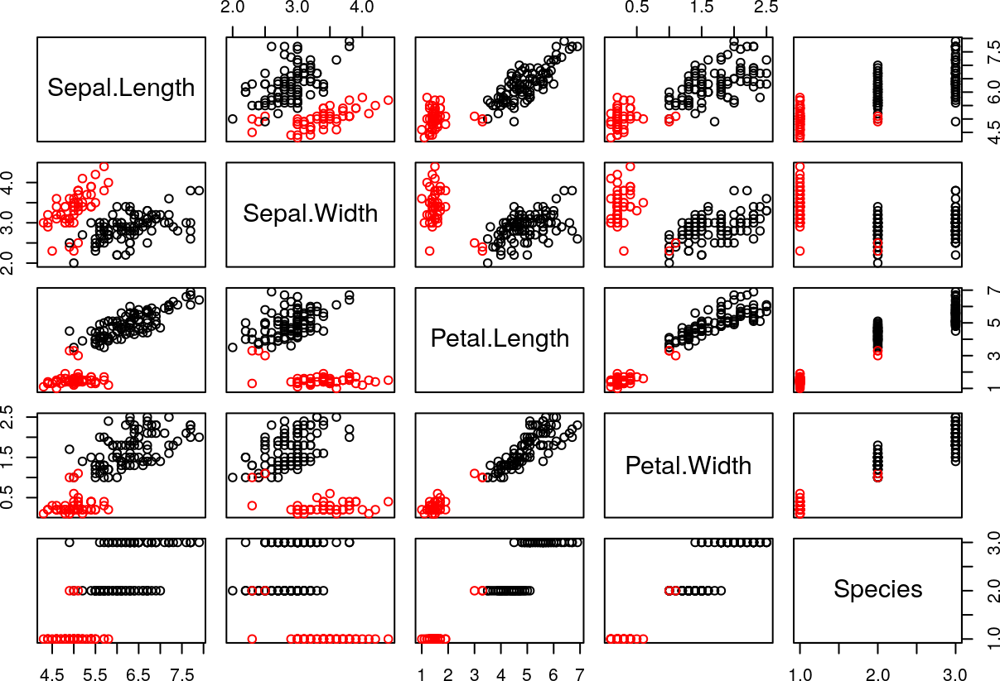
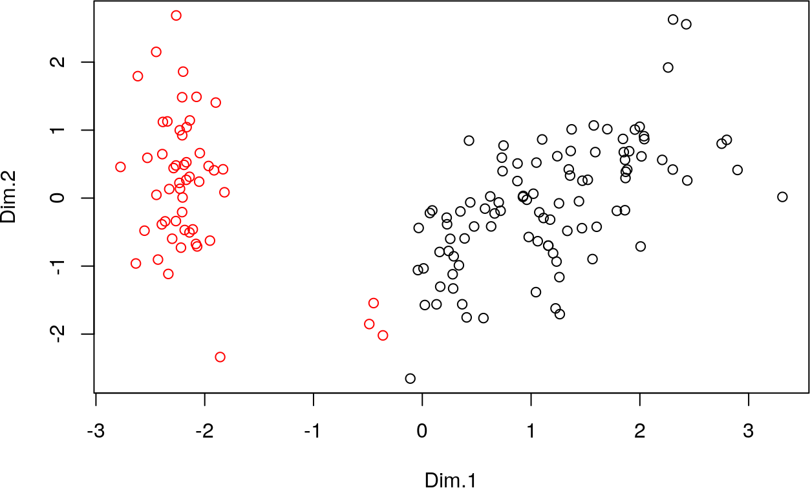

5 Partitionnement de données
Dans ce chapitre, on considère :
- un corpus de données de \(N\) individus ;
- \(p\) variables quantitatives \(X_1, \ldots, X_p\).
Pour tout entier \(i\) entre \(1\) et \(N\) et tout entier \(j\) entre \(1\) et \(p\), on note \(x_{i,j}\) la valeur de la variable \(X_j\) pour le \(i\)-ème individu \(x_i\).
On note également \(X\) la matrice à \(N\) lignes et \(p\) colonnes \(X = \left(x_{i,j}\right)_{1 \leq i \leq N, 1 \leq j \leq p}\), de sorte que :
- \(X_j\) soit sa \(j\)-ème colonne pour tout entier \(j\) entre \(1\) et \(p\) ;
- \(x_i\) soit sa \(i\)-ème ligne pour tout entier \(j\) entre \(1\) et \(N\).
Dans tous les exemples, on utilise le corpus de données des iris de Gaspésie (Anderson 1935) fourni avec le logiciel R et déjà utilisé dans le chapitre précédent. La dernière variable est qualitative, donc elle ne sera pas utilisée pour l’analyse :
5.1 Analyse de la problématique
Définition 5.1 Le partitionnement de données cherche à distinguer des groupes homogèmes, appelés classes au sein d’un corps de données :
- en regroupant les observations ayant des caractéristiques similiaires au sein d’une même classe ;
- en construisant des classes aussi dissemblables que possibles.
Ces classes peuvent alors apporter des informations pertinentes, notamment si elles sont représentés graphiquement (après une analyse en composantes principales, par exemple).
Elles peuvent être utilisées pour découper une étude en plusieurs parties, chaque classe pouvant alors traitée spécifiquement.
Alors \(E\) admet \(B_N = \dfrac{1}{e} \displaystyle\sum_{n = 1}^{+\infty} \dfrac{n^N}{n!}\) partitions distinctes.
| \(N\) | \(B_N\) |
|---|---|
| 5 | 52 |
| 10 | 115 975 |
| 15 | 1 382 958 545 |
| 20 | 51 724 158 235 372 |
| 25 | 4 638 590 332 229 999 353 |
Cette croissance extrêmement rapide impose la nécessite d’algorithmes performants. ```
5.1.1 Distances
5.1.1.1 Distances entre individus
On souhaite regrouper les observations ayant des caractéristiques similiaires au sein d’une même classe. Une méthode naturelle consiste à quantifier la distance entre deux individus.
La distance au sens mathématique du terme convient parfaitement comme, par exemple, les distances issues des normes usuelles :
- la distance euclidienne usuelle \(d_2\) issue de la norme euclidienne \(\|\cdot\|_2\) ;
- la distance dite de Manhattan \(d_1\) issue de la norme \(\|\cdot\|_1\) ;
- la distance \(d_\infty\) issue de la norme \(\|\cdot\|_\infty\).
En R : Calculer une distance usuelle entre deux vecteurs
On utilise la fonction
normdont le second paramètretypespécifie le type de norme à calculer :
type = "1"indique la norme \(\|\cdot\|_1\) ;type = "2"indique la norme \(\|\cdot\|_2\) ;type = "I"indique la norme \(\|\cdot\|_\infty\).
Théorème 5.2 Soit \(x\) et \(y\) deux vecteurs de \(\mathbb{R}^p\) et \(\Sigma\) une matrice symétrique définie positive.
Alors \(\begin{array}[t]{ccl} \mathbb{R}^p \times \mathbb{R}^p & \to & \mathbb{R} \\ (x, y) & \mapsto & \sqrt{(x - y)^\top \Sigma^{-1} (x - y)} \end{array}\) est une distance sur \(\mathbb{R}^p\) appelée distance de MAHALANOBIS.En R : Calculer une distance de MAHALANOBIS entre deux vecteurs
On utilise la fonction
mahalanobis:
covspécifie la matrice \(\Sigma\) ou \(\Sigma^{-1}\) (voirinverted) ;invertedspécifie la nature du paramètrecov:
inverted = FALSEindique quecovcontient \(\Sigma\) (cas par défaut) ;inverted = TRUEindique quecovcontient \(\Sigma^{-1}\).
5.1.1.2 Distances entre classes
On souhaite construire des classes aussi dissemblables que possibles. Une méthode consiste à quantifier la distance entre deux individus.
On présente quatre fonctions, qui ne sont pas des distances au sens mathématique :
Définition 5.2 Soit \(d\) une distance (au sens mathématique du terme) sur \(\mathbb{R}^p\). On définit :
- la distance minimale \(\begin{array}[t]{ccl} d_{\text{min}} & \mathcal{P}(\mathbb{R}^p) \times \mathcal{P}(\mathbb{R}^p) & \to & \mathbb{R} \\ & (A, B) & \mapsto & \min\limits_{a \in A, b \in B} d(a, b) \end{array}\) ;
- la distance maximale \(\begin{array}[t]{ccl} d_{\text{min}} & \mathcal{P}(\mathbb{R}^p) \times \mathcal{P}(\mathbb{R}^p) & \to & \mathbb{R} \\ & (A, B) & \mapsto & \max\limits_{a \in A, b \in B} d(a, b) \end{array}\) ;
- la distance moyenne \(\begin{array}[t]{ccl} d_{\text{moy}} & \mathcal{P}(\mathbb{R}^p) \times \mathcal{P}(\mathbb{R}^p) & \to & \mathbb{R} \\ & (A, B) & \mapsto & \dfrac{1}{(\operatorname{card} A) \cdot (\operatorname{card} B)} \displaystyle\sum\limits_{a \in A, b \in B} d(a, b) \end{array}\) ;
- la distance de WARD \(\begin{array}[t]{ccl} d_{\text{Ward}} & \mathcal{P}(\mathbb{R}^p) \times \mathcal{P}(\mathbb{R}^p) & \to & \mathbb{R} \\ & (A, B) & \mapsto & \dfrac{(\operatorname{card} A) \cdot (\operatorname{card} B)}{(\operatorname{card} A) + (\operatorname{card} B)} d(\bar{a}, \bar{b}) \end{array}\) où \(\bar{a}\) et \(\bar{b}\) désignent respectivement les centres de gravité de \(A\) et \(B\).
Les comportements de ces “distances” sont très différents.
- La distance minimale détecte les formes allongées voire sinueuses. En effet, elle est sensible à l’effet de chaîne : deux points éloignés pourront être considérés comme appartement à la même classe car ils sont reliés par une séquence de points proches les uns des autres.
- La distance maximale est très sensible aux observations atypiques.
- La distance moyenne est peu sensible aux observations atypiques et tend à produire des classes de même variance.
- La distance de WARD est la plus utilisée et tend à produire des classes sphériques de même effectif.
5.1.2 Inerties
On souhaite pouvoir mesurer la qualité d’un partitionnement.
Définition 5.3 Soit \(d\) une distance (au sens math'ematique du terme) sur \(\mathbb{R}^p\).
Soit \(\ell\) un entier naturel non nul et \(\mathcal{P} = (C_k)_{1 \leq k \leq \ell}\) une partition de l’ensemble \(\{x_1,\ldots,x_N\}\).
On définit le centre de gravité, noté \(\bar{x}\), par \(\bar{x} = \dfrac{1}{N}\displaystyle\sum_{i = 1}^N x_i\).
Pour tout entier \(k\) entre \(1\) et \(\ell\), on définit le centre de gravité de \(C_k\), noté \(\bar{c_k}\), par \(\bar{c_k} = \dfrac{1}{\operatorname{card} C_k} \displaystyle\sum_{x \in C_k} x\).
On définit :
- l’inertie totale de \(\{x_1,\ldots,x_N\}\), notée \(I_{\text{tot}}\), par \(I_{\text{tot}} = \dfrac{1}{N}\displaystyle\sum_{i = 1}^N d(x_i, \bar{x})^2\) ;
- l’inertie intra-classes de \(\mathcal{P}\), notée \(I_{\text{intra}}(\mathcal{P})\), par \(I_{\text{intra}}(\mathcal{P}) = \dfrac{1}{N}\displaystyle\sum_{k = 1}^\ell \left(\displaystyle\sum_{x \in C_k} d(x, \bar{c_k})^2\right)\) ;
- l’inertie inter-classes de \(\mathcal{P}\), notée \(I_{\text{inter}}(\mathcal{P})\), par \(I_{\text{inter}}(\mathcal{P}) = \dfrac{1}{N}\displaystyle\sum_{k = 1}^\ell (\operatorname{card} C_k) \cdot d(\bar{c_k}, \bar{x})^2\).
En R : Calculer l’inertie de variables quantitatives
On construit la fonction
inertiaqui calcule \(I_{\text{tot}}\). On utilise la fonctionapplyqui applique une fonction numérique à chaque ligne ou colonne et qui renvoie le vecteur des résultats.
En R : Calculer les inerties intra-classes et inter-classes
On prend comme exemple le partitionnement induit par la variable qualitative
Speciesdont les trois modalités sontsetosa,versicoloretvirginica. On utilise :
- la fonction
subsetqui extrait un sous-ensemble des données vérifiant certaines conditions ;- la fonction
weighted.meanqui calcule une moyenne pondérée dont on spécifie les poids.data_1 <- subset(iris, Species == 'setosa' )[,1:4] ; count.1 <- dim(data_1)[1] data_2 <- subset(iris, Species == 'versicolor')[,1:4] ; count.2 <- dim(data_2)[1] data_3 <- subset(iris, Species == 'virginica' )[,1:4] ; count.3 <- dim(data_3)[1] I.intra <- weighted.mean(c(inertia(data_1, "2"), inertia(data_2, "2"), inertia(data_3, "2")), c(count.1, count.2, count.3)) ; I.intra [1] 0.595316center.total <- colMeans(data) center.1 <- colMeans(data_1) ; count.1 <- dim(data_1)[1] center.2 <- colMeans(data_2) ; count.2 <- dim(data_2)[1] center.3 <- colMeans(data_3) ; count.3 <- dim(data_3)[1] I.inter <- weighted.mean(c(norm(as.matrix(center.1 - center.total), "2")^2, norm(as.matrix(center.2 - center.total), "2")^2, norm(as.matrix(center.3 - center.total), "2")^2), c(count.1, count.2, count.3)) ; I.inter [1] 3.947155
Remarque. Les expressions des inerties inter-classes et intra-classes s’expliquent la manière suivante :
- l’inertie intra-classes est obtenue en calculant la moyenne, pondérée par les effectifs, des inerties de chacune des classes ;
- l’inertie inter-classes est obtenue en calculant l’inertie, pondérée par les effectifs, de l’ensemble des centres de gravités de chacune des classes.
Donc :
- pour regrouper les observations ayant des caractéristiques similiaires au sein d’une même classe, l’inertie de chaque classe doit être aussi faible que possible : donc l’inertie intra-classes doit être aussi faible que possible ;
- pour construire des classes aussi dissemblables que possibles, leurs centres de gravité doivent être aussi éloignés que possibles : donc l’inertie inter-classes doit être aussi élevée que possible.
En R : Vérifier la relation entre les inerties dans le cas de la distance euclidenne usuelle
Une mesure souvent utilisée est le coefficient \(R^2 = \dfrac{I_{\text{inter}}(\mathcal{P})}{I_{\text{tot}}}\), c’est-à-dire le pourcentage d’inertie expliquée par les classes. Elle peut servir notamment à :
- comparer deux partitionnements ayant le même nombre de classes ;
- sélectionner le nombre de classes : ainsi si on représente ce coefficient en fonction du nombre de classes, on choisit le nombre de classes provoquant le dernier saut important.
En R : Calculer le pourcentage d’inertie expliquée par les classes
5.2 Algorithmes
5.2.1 \(k\)-moyennes
Définition 5.4 On se donne une distance (au sens mathématique du terme) \(d\) sur \(\mathbb{R}^p\) et \(\ell\) un entier naturel non nul.
Alors l’algorithme des \(k\)-moyennes (ou \(k\)-means en anglais) est défini comme suit :
- On choisit \(\ell\) individus, notés \(c_1, \ldots, c_\ell\).
- Pour tout entier \(k\) entre \(1\) et \(\ell\), on construit la classe \(C_k = \left\{x_i,\: d(x_i, c_k) = \min\limits_{1 \leq k' \leq \ell} d(x_i, c_{k'})\right\}\) des individus tels que le point le plus proche parmi \(c_1, \ldots, c_\ell\) est \(c_k\).
- Pour tout entier \(k\) entre \(1\) et \(\ell\), on remplace \(c_k\) par le centre de gravité de \(C_k\).
- Si toutes les classes restent inchangées par rapport à l’itération précédente, alors l’algorithme s’arrête. Sinon, on revient à l’étape 2.
Par définition, cet algorithme dépend de :
- la distance \(d\) utilisée : ainsi dans le cas de la distance euclidienne, l’algorithme tend à produire des classes sphériques ;
- du nombre \(\ell\) de classes choisies : on peut tester plusieurs valeurs de \(\ell\) en s’aidant par exemple d’une analyse en composantes principales ;
- des centres \(c_1, \ldots, c_\ell\) choisis initialement : on peut alors répéter plusieurs fois l’algorithme avec des choix aléatoires afin de lisser les résultats obtenus.
En R : Appliquer l’algorithme des \(k\)-moyennes avec la distance euclidienne sur des variables quantitatives
On utilise la fonction
kmeans:
centersspécifie les centres utilisées pour initialiser l’algorithme :
- par un entier pour indiquer le nombre de classes et choisit les centres initiaux de manières aléatoire ;
- par une matrice à \(N\) lignes et \(\ell\) colonnes pour indiquer par ligne les \(\ell\) centres initiaux ;
iter.maxspécifie le nombre maximal d’itérations de l’algorithme (10 par défaut) ;nstartspécifie le nombre de répétitions de l’algorithme à des fins de lissage des résultats (1 par défaut) : les répétitions ne sont appliquées que sicentersest un entier.Elle renvoie un objet avec les champs suivants :
clustercontient le numéro de classe (de \(1\) à \(\ell\)) pour chacun des individus ;centerscontient la matrice par ligne des centres de gravité des classes finales ;totssest égal à \(N \cdot I_{\text{tot}}\) ;tot.withinssest égal à \(N \cdot I_{\text{intra}}(\mathcal{P})\) ;betweenssest égal à \(N \cdot I_{\text{inter}}(\mathcal{P})\) ;sizecontient le nombre d’éléménts pour chaque classe ;iterest égal au nombre d’itérations effectuée par l’application de l’algorithme.Donc le pourcentage d’inertie expliquée par les classes est égal au rapport entre les champs
betweenssettotss:
En R : Utiliser les résultats de la fonction
kmeanspour représenter graphiquement les classes obtenuesOn utilise le champ
clustercomme paramètre de couleur :
On peut combiner les résultats avec une analyse en composantes principales en représentant les classes dans le plan défini par les deux premières composantes principales :

Cet algorithme présente les intérêts suivants :
- un individu atypique est en général détecté car il tend à produire une classe dont il est le seul élément ;
- la complexité de l’algorithme est polynômiale.
5.2.2 Classification hiérarchique ascendante
Définition 5.5 On se donne une “distance” entre classes \(d\).
Alors la classification hiérarchique ascendante est définie comme suit :
- Initialement, chaque individu est une classe dont il est le seul élément.
- On considère les deux classes dont la distance est la plus faible (au sens de \(d\)) et on les fusionne en une seule classe.
- On réitère l’étape 2 jusqu’à n’obtenir qu’une seule classe.
Par définition, cet algorithme dépend de la “distance” utilisée qui agit, comme vu précédemment, sur la forme des classes obtenues.
Contrairement à l’algorithme des \(k\)-moyennes :
- le nombre de classes n’est pas fixé à l’avance ;
- l’initialisation est constante, donc il n’y a pas de dépendance du résultat à l’initialisation.
Toutefois :
- l’algorithme est de type “glouton” : donc le résultat obtenu est un optimum local et l’optimalité globable n’est pas assurée ;
- l’algorithme est de complexité exponentielle.
En R : Appliquer une classification hiérarchique ascendante de variables quantitatives
On utilise la fonction
hclust(pour Hierarchical CLUSTering) dont le second paramètremethodspécifie la “distance” entre classes utilisée.
Cette fonction s’applique sur le résultat de la fonctiondistqui calcule les distances respectives entre tous les individus dont le second paramètremethodspécifie la distance utilisée comme :
"manhattan"pour la distance de Manhattan \(d_1\) ;"euclidean"pour la distance euclidienne usuelle \(d_2\) (valeur par défaut) ;"maximum"pour la distance \(d_\infty\).Par exemple, on calcule ici une classification hiérarchique ascendante avec :
- la distance euclidienne usuelle \(d_2\) entre les individus ;
- la “distance” WARD entre les classes.
L’algorithme fournit donc une arborescence des fusions. Il convient alors d’étudier la qualité du partitionnement après chaque fusion en étudiant deux représentations graphiques ;
- l’évolution de la qualité du partitionnement en fonction du nombre d’itérations ;
- la visualisation hiérarchique de cette évolution dans un dendrogramme.
En R : Étudier l’évolution de la qualité du partitionnement à partir d’une classification
La fonction
hclustrenvoie un objet avec les champs suivants :
mergedécrit les fusions effectuées à chaque itération de l’algorithme ;heightcontient les valeurs successives de dissimilarité à chaque itération de l’algorithme.
On cherche alors un saut important entre deux fusions successives, sans considérer l’écart entre les deux dernières itérations (car cela mène à une seule classe, cas sans intérêt). Dans ce cas, le saut le plus important se situe après la fusion en deux classes.
On peut visualiser le dendrogramme qui confirme l’observation précédente :


5.3 Conclusion
De manière générale, on peut distinguer deux types de méthodes :
- les méthodes non hiérarchiques (comme celle des \(k\)-moyennes) :
- elles nécessitent une connaissance a priori du nombre de classes ;
- leur résultat peut être sensible à l’initialisation ;
- elles convergent rapidement ;
- les méthodes hiérachiques (comme la classification hiérarchique ascendante) :
- elles ne nécessitent pas une connaissance a priori du nombre de classes ;
- leur résultat est en général peu sensible à l’initialisation ;
- l’algorithme de type “glouton” fournit un optimum local ;
- elles convergent lentement.
Un bon compromis peut consister en une approche hybride :
- utiliser une méthode hiérarchique pour estimer le nombre de classes nécessaires ;
- utiliser cette estimation pour initialiser une méthode non hiérarchique.